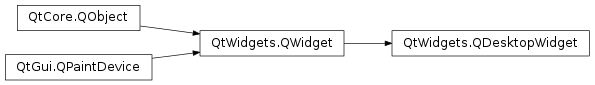

QDesktopWidget¶
Synopsis¶
Functions¶
- def
availableGeometry([screen=-1]) - def
availableGeometry(point) - def
availableGeometry(widget) - def
isVirtualDesktop() - def
numScreens() - def
primaryScreen() - def
screen([screen=-1]) - def
screenCount() - def
screenGeometry([screen=-1]) - def
screenGeometry(point) - def
screenGeometry(widget) - def
screenNumber([widget=nullptr]) - def
screenNumber(arg__1)
Signals¶
- def
primaryScreenChanged() - def
resized(arg__1) - def
screenCountChanged(arg__1) - def
workAreaResized(arg__1)
Detailed Description¶
The
PySide2.QtWidgets.QDesktopWidgetclass provides access to screen information on multi-head systems.Systems with more than one graphics card and monitor can manage the physical screen space available either as multiple desktops, or as a large virtual desktop.
This class provides information about the user’s desktop, such as its total size, number of screens, the geometry of each screen, and whether they are configured as separate desktops or a single virtual desktop.
Widgets provided by Qt use this class to place tooltips, menus and dialog boxes on the correct screen for their parent or application widgets. Applications can use this class to obtain information that can be used to save window positions, or to place child widgets and dialogs on one particular screen.
Obtaining a Desktop Widget¶
The
QApplication.desktop()function is used to get an instance ofPySide2.QtWidgets.QDesktopWidget.The widget’s
PySide2.QtWidgets.QDesktopWidget.screenGeometry()function provides information about the geometry of the available screens with. The number of screens available is returned byPySide2.QtWidgets.QDesktopWidget.screenCount(), and thePySide2.QtWidgets.QDesktopWidget.screenCountChanged()signal is emitted when screens are added or removed. The screen number that a particular point or widget is located in is returned byPySide2.QtWidgets.QDesktopWidget.screenNumber().
Screen Geometry¶
To obtain the dimensions of a particular screen, call the
PySide2.QtWidgets.QDesktopWidget.screenGeometry()function. On some desktop environments, not all of the screen is available for applications to use; for example, an application dock or menu bar may take up some space. Use thePySide2.QtWidgets.QDesktopWidget.availableGeometry()function to obtain the available area for applications.
PySide2.QtWidgets.QDesktopWidgetalso inherits thePySide2.QtWidgets.QWidgetproperties,PySide2.QtWidgets.QWidget.width()andPySide2.QtWidgets.QWidget.height(), which specify the size of the desktop. However, for desktops with multiple screens, the size of the desktop is the union of all the screen sizes, soPySide2.QtWidgets.QWidget.width()andPySide2.QtWidgets.QWidget.height()should not be used for computing the size of a widget to be placed on one of the screens.On systems that are configured to use the available screens as a single, large virtual desktop, the
virtualDesktop()property will be set to true. In this case, the widget’s size is usually the size of the bounding rectangle of all the screens.
Use of the Primary Screen¶
For an application, the screen where the main widget resides is the primary screen. This is stored in the
PySide2.QtWidgets.QDesktopWidget.primaryScreen()property. All windows opened in the context of the application should be constrained to the boundaries of the primary screen; for example, it would be inconvenient if a dialog box popped up on a different screen, or split over two screens.
In the illustration above, Application One’s primary screen is screen 0, and App Two’s primary screen is screen 1.
-
class
PySide2.QtWidgets.QDesktopWidget¶ Creates the desktop widget.
If the system supports a virtual desktop, this widget will have the size of the virtual desktop; otherwise this widget will have the size of the primary screen.
Instead of using
PySide2.QtWidgets.QDesktopWidgetdirectly, useQApplication.desktop().
-
PySide2.QtWidgets.QDesktopWidget.availableGeometry(widget)¶ Parameters: widget – PySide2.QtWidgets.QWidgetReturn type: PySide2.QtCore.QRectThis is an overloaded function.
Returns the available geometry of the screen which contains
widget.
-
PySide2.QtWidgets.QDesktopWidget.availableGeometry([screen=-1]) Parameters: screen – PySide2.QtCore.intReturn type: PySide2.QtCore.QRectReturns the available geometry of the screen with index
screen. What is available will be subrect ofPySide2.QtWidgets.QDesktopWidget.screenGeometry()based on what the platform decides is available (for example excludes the dock and menu bar on macOS , or the task bar on Windows). The default screen is used ifscreenis -1.Use
QGuiApplication.screens()instead.See also
PySide2.QtWidgets.QDesktopWidget.screenNumber()PySide2.QtWidgets.QDesktopWidget.screenGeometry()QScreen.availableGeometry()
-
PySide2.QtWidgets.QDesktopWidget.availableGeometry(point) Parameters: point – PySide2.QtCore.QPointReturn type: PySide2.QtCore.QRectThis is an overloaded function.
Returns the available geometry of the screen which contains
p.Use
QGuiApplication.screenAt()instead.
-
PySide2.QtWidgets.QDesktopWidget.isVirtualDesktop()¶ Return type: PySide2.QtCore.bool
-
PySide2.QtWidgets.QDesktopWidget.numScreens()¶ Return type: PySide2.QtCore.intReturns the number of available screens.
Use
QGuiApplication.screens()instead.
-
PySide2.QtWidgets.QDesktopWidget.primaryScreen()¶ Return type: PySide2.QtCore.int
-
PySide2.QtWidgets.QDesktopWidget.primaryScreenChanged()¶
-
PySide2.QtWidgets.QDesktopWidget.resized(arg__1)¶ Parameters: arg__1 – PySide2.QtCore.int
-
PySide2.QtWidgets.QDesktopWidget.screen([screen=-1])¶ Parameters: screen – PySide2.QtCore.intReturn type: PySide2.QtWidgets.QWidgetReturns a widget that represents the screen with index
screen(a value of -1 means the default screen).If the system uses a virtual desktop, the returned widget will have the geometry of the entire virtual desktop; i.e., bounding every
screen.Use
PySide2.QtGui.QScreeninstead.See also
PySide2.QtWidgets.QDesktopWidget.primaryScreen()PySide2.QtWidgets.QDesktopWidget.screenCount()virtualDesktop()
-
PySide2.QtWidgets.QDesktopWidget.screenCount()¶ Return type: PySide2.QtCore.int
-
PySide2.QtWidgets.QDesktopWidget.screenCountChanged(arg__1)¶ Parameters: arg__1 – PySide2.QtCore.int
-
PySide2.QtWidgets.QDesktopWidget.screenGeometry([screen=-1])¶ Parameters: screen – PySide2.QtCore.intReturn type: PySide2.QtCore.QRectReturns the geometry of the screen with index
screen. The default screen is used ifscreenis -1.Use
QGuiApplication.screens()instead.
-
PySide2.QtWidgets.QDesktopWidget.screenGeometry(widget) Parameters: widget – PySide2.QtWidgets.QWidgetReturn type: PySide2.QtCore.QRectThis is an overloaded function.
Returns the geometry of the screen which contains
widget.
-
PySide2.QtWidgets.QDesktopWidget.screenGeometry(point) Parameters: point – PySide2.QtCore.QPointReturn type: PySide2.QtCore.QRectThis is an overloaded function.
Returns the geometry of the screen which contains
p.Use
QGuiApplication.screenAt()instead.
-
PySide2.QtWidgets.QDesktopWidget.screenNumber(arg__1)¶ Parameters: arg__1 – PySide2.QtCore.QPointReturn type: PySide2.QtCore.intThis is an overloaded function.
Returns the index of the screen that contains the
point, or the screen which is the shortest distance from thepoint.Use
QGuiApplication.screenAt()instead.
-
PySide2.QtWidgets.QDesktopWidget.screenNumber([widget=nullptr]) Parameters: widget – PySide2.QtWidgets.QWidgetReturn type: PySide2.QtCore.intReturns the index of the screen that contains the largest part of
widget, or -1 if the widget not on a screen.
-
PySide2.QtWidgets.QDesktopWidget.workAreaResized(arg__1)¶ Parameters: arg__1 – PySide2.QtCore.int
© 2018 The Qt Company Ltd. Documentation contributions included herein are the copyrights of their respective owners. The documentation provided herein is licensed under the terms of the GNU Free Documentation License version 1.3 as published by the Free Software Foundation. Qt and respective logos are trademarks of The Qt Company Ltd. in Finland and/or other countries worldwide. All other trademarks are property of their respective owners.